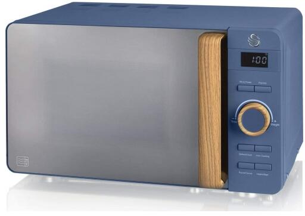
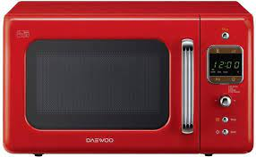

A mikrohullámú sütő (köznapi nevén: mikrosütő, mikró) olyan konyhai berendezés, amely mikrohullám segítségével
melegíti fel a beletett ételt vagy folyadékot. Feltalálója Percy Spencer amerikai mérnök volt, aki 1946-ban egy
radaralkatrész kifejlesztésén dolgozott, és egy véletlen folytán felfedezte, hogy a mikrohullámú sugárzás az ételek
felmelegítésére is alkalmas.
A sütő mikrohullám segítségével forgatja és rezgeti a melegítendő anyag dipólusmolekuláit, aminek következtében a
melegítésre szánt anyag belsejében súrlódási hő fejlődik, és ez melegíti fel az ételt. A sütő erről kapta a nevét.
Működése
A mikrosütőben 2,45 GHz frekvenciájú elektromágneses hullámok, más néven mikrohullámok képződnek. A hullámforrás a
magnetron, ez a berendezés lelke. A magnetronban az elektromos energia mikrohullámú energiává alakul át. A
mikrohullámok üreges vezetőn jutnak át a sütőtérbe, ahol állóhullámok alakulnak ki, ezért az egyenletes hőhatás
érdekében az ételt tartó tálcát forgatni kell. Rendszerint egy üvegtálon forog a ráhelyezett étel. A
nagyfrekvenciájú hullámok bizonyos mélységig behatolnak a melegítendő anyagba, és mozgásba hozzák a víz-, zsír- és
cukormolekulákat. A molekulák egymás melletti elmozdulása következtében jelentős mennyiségű súrlódási hő keletkezik.
Ez a hő belülről melegíti fel a mikrosütőben elhelyezett ételt vagy italt, ellentétben pl. a gázon való sütéssel,
amikor a hő kívülről, hőáramlással melegíti az ételt. A készülékben lévő két ventilátor közül az egyik a magnetront
hűti, a másik a sütőteret szellőzteti; ez a beépített változatokra jellemző, míg az asztali mikrohullámú sütőket
általában egy ventilátorral gyártják.
A háztartási mikrosütők hasznos teljesítménye 1 kW körüli, a berendezés ennek kb. a dupláját veszi fel. A melegítési
időt mechanikus vagy elektronikus óra segítségével lehet beállítani, de a kikapcsológombbal vagy az ajtó
kinyitásával is megszakítható a folyamat. (Az ajtó kinyitásakor egyes készülékek nem nullázzák le az órát, az ajtó
becsukásakor tehát a melegítés folytatódik.)
A készülék ajtajában fém védőháló van, ami megakadályozza a mikrohullámok kijutását és kültéri roncsoló hatását.
A védőháló, illetve az ajtó sérülése esetén a készülék a közvetlen közelében égési sérülést okozhat, ezért az ilyen
készülék használata tilos.
Van belőle:
Piros
Fehér
Szürke
- Gorenje
- Candy
- Sencor
- Severin
Pitos
- Anyum tuti ilyet venne
Sima szürke
- Kicsin unalmas de jo lesz igy elsőnek
Fehér
- Most komolyan? Tiszta kosz lesz ket használat után...
Fekete
- tökéletes


LG Története